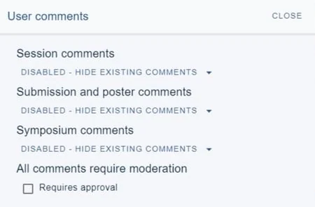
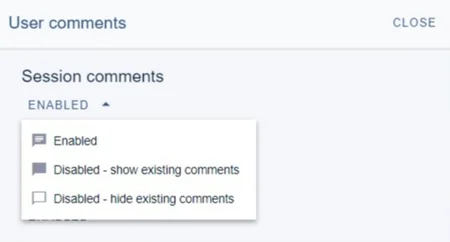
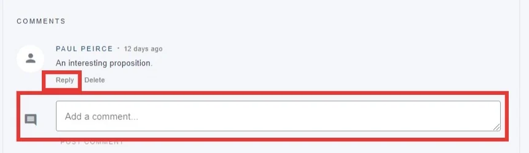
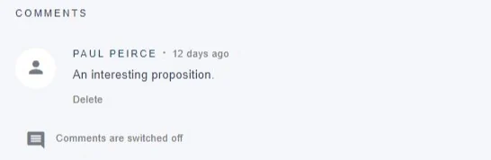
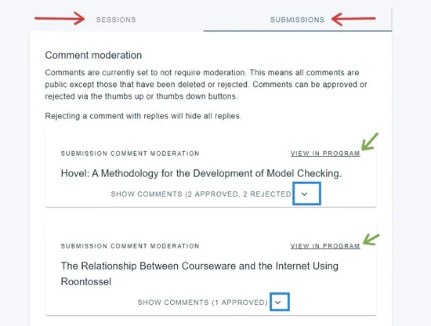
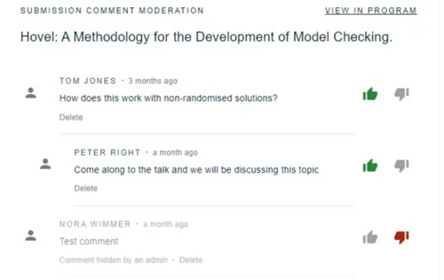
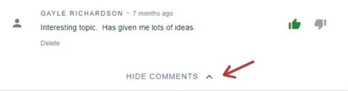

Comments on sessions and abstracts
For event organisersNot an organiser?
This feature allows delegates to add comments to sessions, submissions and posters. This feature is only available in the Professional Conference package.#
Go to Event dashboard → Conference → Program → Builder ➞ Settings ➞Advanced Features ➞ User comments
Skip to Moderation
The User comments panel will appear on your screen. Here, you can set the permissions for commenting on sessions or individual submissions.
NB If you have the Symposia module, this will also be included.
You can enable or disable these independently and according to your preferences.

Clicking on the down arrow will reveal the visibility options: The choices are:
Enabled -(users can comment)
Disabled - show existing comments(all comments will be displayed but no new comments permitted)
Disabled -hide existing comments(no comments displayed or permitted)

Enabled
When this is set, the user's view is as below. They can either reply to an existing comment, or post a new comment.

Disabled - show existing comments
When this is set, the user's view is as below.

Disabled -hide existing comments**
When this is set, the user will not see any existing comments or be able to comment.
Viewing and moderating comments
Go to Event dashboard → Conference → Comment moderation
You will then see the moderation panel. There are two tabs (red) - one for comments on the sessions, one for those on submissions (this includes posters). You then have the option to view them in the program (green), and show, approve and reject the comments. Click on the down arrow to do this (blue).

The list of comments will appear.
Click the thumbs up icon to approve (will turn green if selected), the thumbs down icon to reject (will turn red if selected).

Click the up arrow to hide this session's comments when you are done.


The comments will then be displayed in the program.
Did this page solve it?
Thanks — this helps us fix it.
Didn't solve it? Ask our support team
No question is too small, and there's no charge for asking. Raise a ticket and someone who knows the software will pick it up.